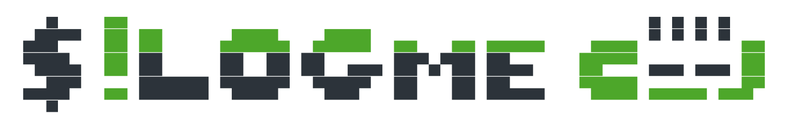

<!--
  =============================================================================
  LOGme.sh Script Documentation
  =============================================================================
  WHAT: Detailed documentation and demo page for LOGme.sh terminal-based login enhancement
  WHY:  Provides comprehensive reference with wezterm setup, RGB configuration,
        and autostart without bloating the main index page
  HOW:  Semantic HTML5 with shared style.css; includes feature details, video demo,
        and troubleshooting guide
  NOTE: Navigate back to index.html for project overview
  =============================================================================
-->
<!DOCTYPE html>
<html lang="en">

<head>
  <meta charset="UTF-8">
  <meta name="viewport" content="width=device-width, initial-scale=1.0">
  <meta name="description" content="LOGme.sh - Terminal-based login enhancement with wezterm split-pane orchestration and RGB lighting">
  <link rel="stylesheet" href="../style.css" />
  <link rel="icon" type="image/svg+xml" href="../assets/icons/favicon.svg" />
  <title>LOGme.sh - BASHparaphernalia</title>
</head>

<body>

  <header>
    <button id="theme-toggle" aria-label="Toggle light/dark theme">🌞</button>
    
    <h1>🌈 LOGme.sh</h1>
    <h2>Terminal-Based Login Enhancement</h2>
    <div class="buttons">
      <a href="../index.html"></a>
      <a href="https://github.com/TheOnliestMattastic/BASHparaphernalia/blob/main/scripts/LOGme/LOGme.sh" target="_blank"></a>
      <a href="https://github.com/TheOnliestMattastic/BASHparaphernalia/tree/main/scripts/LOGme" target="_blank"></a>
    </div>
  </header>

  <main>
    <div class="project-card">
      <h2>Overview</h2>
      <p>
        <strong>LOGme.sh</strong> transforms your terminal login experience with sophisticated wezterm split-pane orchestration. It displays RGB setup, cbonsai tree animation, fortune messages, and concurrent task execution in a visually engaging multi-pane interface.
      </p>
    </div>

    <div class="project-card">
      <h2>Demo</h2>
      <video width="100%" controls style="max-width: 600px; border-radius: 8px;">
        <source src="../assets/LOGme-preview.mp4" type="video/mp4">
        Your browser does not support the video tag.
      </video>
      <p style="font-size: 0.9em; margin-top: 0.5em; color: #888;">Video shows: Autoload prompt → User input (y) → Wezterm split panes with cbonsai animation and fortune display → MTrclone task execution</p>
    </div>

    <div class="project-card">
      <h2>Key Features</h2>
      <ul>
        <li><strong>Split-Pane Terminal Display:</strong> Left pane shows OpenRGB setup then cbonsai animation; right pane displays fortune with syntax highlighting then runs MTrclone</li>
        <li><strong>Wezterm Orchestration:</strong> Advanced terminal control for concurrent visual feedback</li>
        <li><strong>OpenRGB Integration:</strong> Automatic RGB profile loading for ambient lighting control</li>
        <li><strong>System Visualization:</strong> Bonsai tree animation provides engaging visual feedback during initialization</li>
        <li><strong>Fortune Display:</strong> Random quotes with cowsay ASCII art, syntax-highlighted via bat</li>
        <li><strong>Task Logging:</strong> Visible execution of additional startup scripts (MTrclone.sh)</li>
        <li><strong>Smart Autostart:</strong> Detects existing configuration; prompts for setup only when needed</li>
        <li><strong>Cross-Desktop:</strong> Works with both KDE Plasma and GNOME (.desktop file autostart)</li>
        <li><strong>Graceful Error Handling:</strong> Continues execution despite individual component failures</li>
      </ul>
    </div>

    <div class="project-card">
      <h2>Installation & Setup</h2>
      <h3>Install Dependencies</h3>
      <pre class="code"><code">sudo dnf install wezterm openrgb fortune cowsay bat cbonsai</code></pre>

      <h3>Configure OpenRGB Profile</h3>
      <p>LOGme.sh expects a profile named "Home" in OpenRGB. Create or rename an existing profile:</p>
      <ol>
        <li>Open OpenRGB</li>
        <li>Create a new profile or rename an existing one to "Home"</li>
        <li>Save the profile with your desired lighting configuration</li>
      </ol>

      <h3>Make Executable and Run</h3>
      <pre class="code"><code">cd BASHparaphernalia/scripts/LOGme
chmod +x LOGme.sh
./LOGme.sh

# Script will prompt to set up autostart if not already configured</code></pre>
    </div>

    <div class="project-card">
      <h2>Autostart Configuration</h2>
      <p>When you run LOGme.sh for the first time, it will prompt you to set up autostart. The script creates a .desktop file in your autostart directory:</p>
      <pre class="code"><code"># For KDE Plasma:
~/.config/autostart/LOGme.desktop

# For GNOME:
~/.config/autostart/LOGme.desktop

# To manually set up autostart without the prompt:
cd BASHparaphernalia/scripts/LOGme
./LOGme.sh --setup-autostart</code></pre>
      <p><strong>Result:</strong> LOGme.sh will run automatically when you log in to your desktop environment.</p>
    </div>

    <div class="project-card">
      <h2>Layout and Workflow</h2>
      <p>When executed, LOGme.sh creates a wezterm window with two split panes:</p>
      <p><strong>Left Pane:</strong></p>
      <ol>
        <li>OpenRGB profile loading confirmation</li>
        <li>Cbonsai tree animation (visual feedback during startup)</li>
      </ol>
      <p><strong>Right Pane:</strong></p>
      <ol>
        <li>Random fortune quote displayed with cowsay ASCII art</li>
        <li>Fortune output syntax-highlighted by bat</li>
        <li>MTrclone.sh executes to mount cloud storage accounts</li>
        <li>Visible progress and status messages</li>
      </ol>
    </div>

    <div class="project-card">
      <h2>Dependencies</h2>
      <ul>
        <li><strong>Required:</strong> wezterm, openrgb, fortune, cowsay, bat, cbonsai</li>
        <li><strong>Optional:</strong> None</li>
      </ul>
      <p><strong>Notes:</strong></p>
      <ul>
        <li>Requires OpenRGB to be configured with a profile named "Home"</li>
        <li>Requires wezterm as the terminal emulator</li>
        <li>All other tools are standard utilities available in Fedora/Nobara repositories</li>
      </ul>
    </div>

    <div class="project-card">
      <h2>Troubleshooting</h2>
      <ul>
        <li><strong>Wezterm not found:</strong> Install with <code>sudo dnf install wezterm</code></li>
        <li><strong>OpenRGB connection fails:</strong> Ensure OpenRGB daemon is running and "Home" profile exists</li>
        <li><strong>Cbonsai not found:</strong> Install with <code>sudo dnf install cbonsai</code></li>
        <li><strong>Autostart not working:</strong> Verify .desktop file is in <code>~/.config/autostart/</code></li>
        <li><strong>Pane commands fail:</strong> Check wezterm installation; older versions may have different CLI syntax</li>
        <li><strong>Fortune returns nothing:</strong> Verify fortune package is installed and has data files</li>
        <li><strong>Script hangs:</strong> Kill stuck processes with <code>killall wezterm</code> or close the window</li>
      </ul>
    </div>

    <div class="project-card">
      <h2>Customization</h2>
      <p>Edit the script to customize behavior:</p>
      <ul>
        <li><strong>Different OpenRGB profile:</strong> Change "Home" to your profile name</li>
        <li><strong>Skip specific components:</strong> Comment out sections in the script</li>
        <li><strong>Run different startup scripts:</strong> Replace MTrclone.sh with your own commands</li>
        <li><strong>Adjust timing:</strong> Modify sleep values for faster/slower pane transitions</li>
      </ul>
    </div>

  </main>

  <footer>
    <p><q><em>Sometimes the questions are complicated and the answers are simple.</em></q> — Dr. Seuss</p>
  </footer>

  <script>
    (function() {
      const themeToggle = document.getElementById('theme-toggle');
      const htmlElement = document.documentElement;

      const savedTheme = localStorage.getItem('theme') || 'system';
      const prefersDark = window.matchMedia('(prefers-color-scheme: dark)').matches;
      const initialTheme = savedTheme === 'system' ? (prefersDark ? 'dark' : 'light') : savedTheme;

      htmlElement.setAttribute('data-theme', initialTheme);
      updateToggleEmoji(initialTheme);

      themeToggle.addEventListener('click', () => {
        const currentTheme = htmlElement.getAttribute('data-theme');
        const newTheme = currentTheme === 'dark' ? 'light' : 'dark';

        htmlElement.setAttribute('data-theme', newTheme);
        localStorage.setItem('theme', newTheme);
        updateToggleEmoji(newTheme);
      });

      function updateToggleEmoji(theme) {
        themeToggle.textContent = theme === 'dark' ? '🌙' : '🌞';
      }
    })();
  </script>

</body>

</html>
